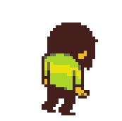

A Rota Neutra ou Rota Normal não é muito diferente da Rota Pacifista,
tanto que quando o protagonista faz a Pacifista e mata qualquer monstro
a rota automaticamente vira a Neutra.
As mudanças são que após a luta com Asgore você escolhe matá-lo ou poupá-lo.
Logo após isso, Flowey aparece e rouba as almas humanas
e vira Ômega Flowey ou Photoshop Flowey.
Após matar sua versão mais forte, você tem a opção de matar ou poupar a flor.
Caso decida matá-la, ela voltará caso inicie um novo jogo.
@dokidokiabr
